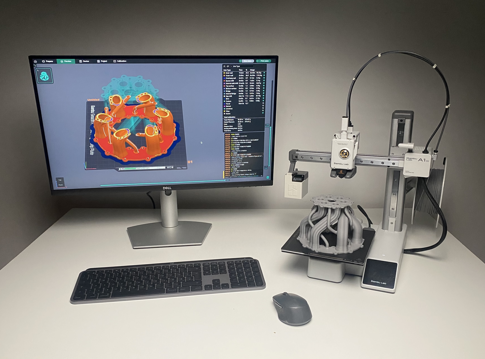

Maximilian Schmahl
Engineer · Coder · Creative
Currently I:
Current Interests:
Generative Design, Contouring, G-Code, GLSL, WGSL, Rust, 3MF, Computer Graphics, Implicit Modeling & Signed Distance FunctionsExperience with:
CAD Design, Finit Element Method (FEM), Homogenization Methods, Response-Surface Optimization, Python, CNC MachiningAbout me:
I love cooking, having long walks, good coffee and doing as much sports as possible. I look forward to go back to running after an injury. I do have the worlds coziest chamber to fiddle around with my 3d-printer.Links & Documents:
CV (pdf) LinkedIn GitHub
See how we turned ideas into reality. Dive into the stories of successful product designs that make a difference.
Read my CV